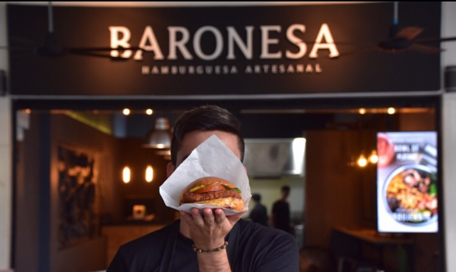

Mc Niko: It handles a very cultural theme with very Colombian, flavors and it is a very handmade hamburger.

Sixth Zone: They have different types of very handmade hamburgers with different flavors and structures to give a plus to their product.

Baroness: It stands out for its tradition and unique flavors and the craftsmanship of its angus meat.